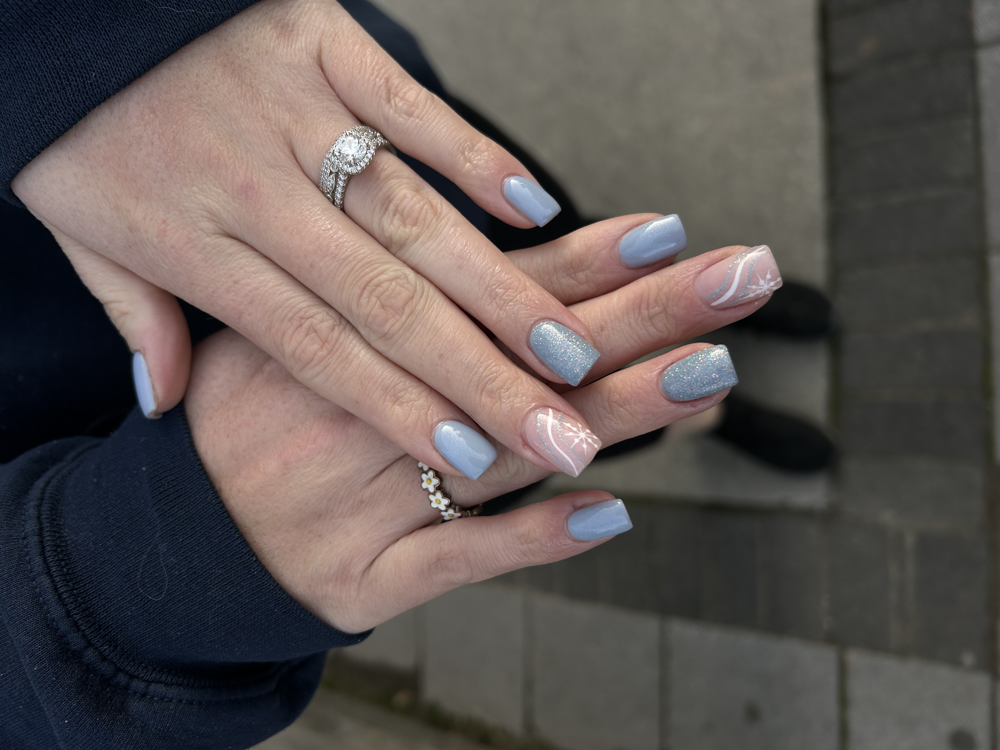
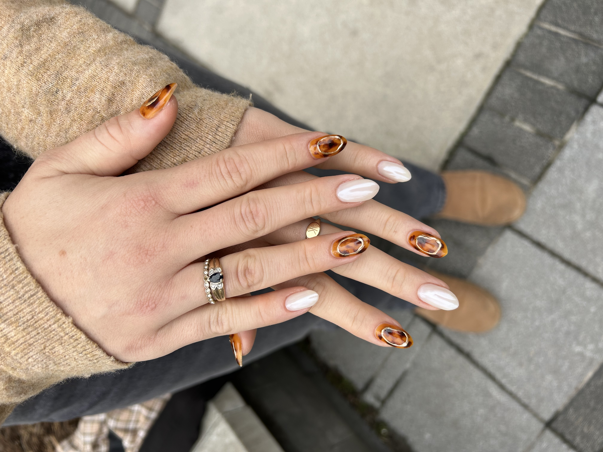
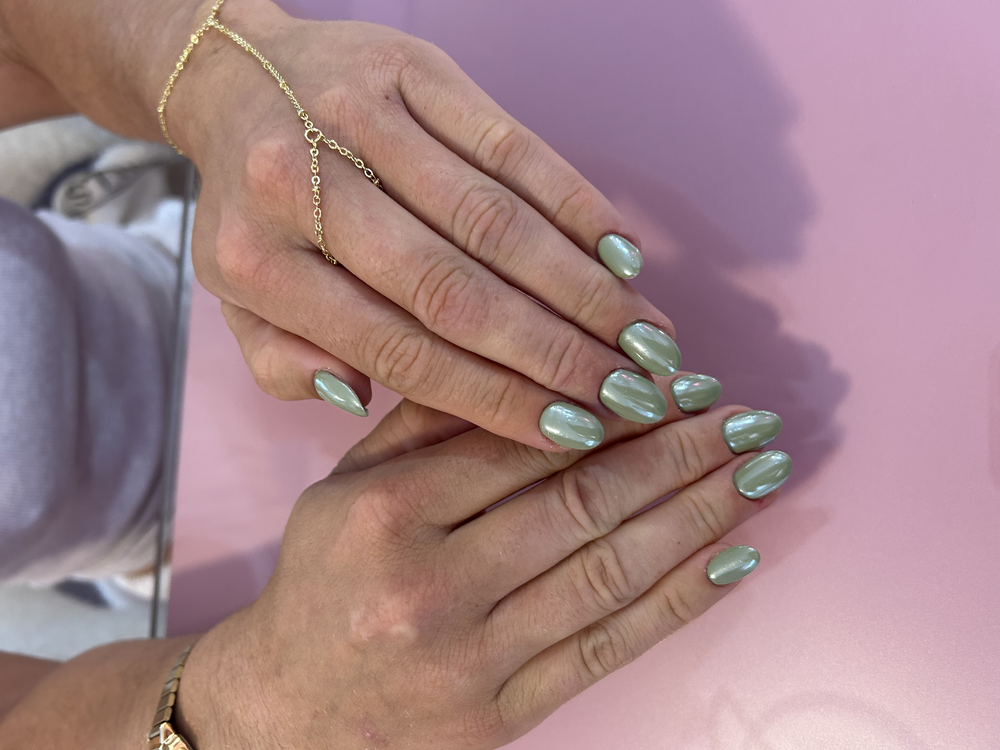
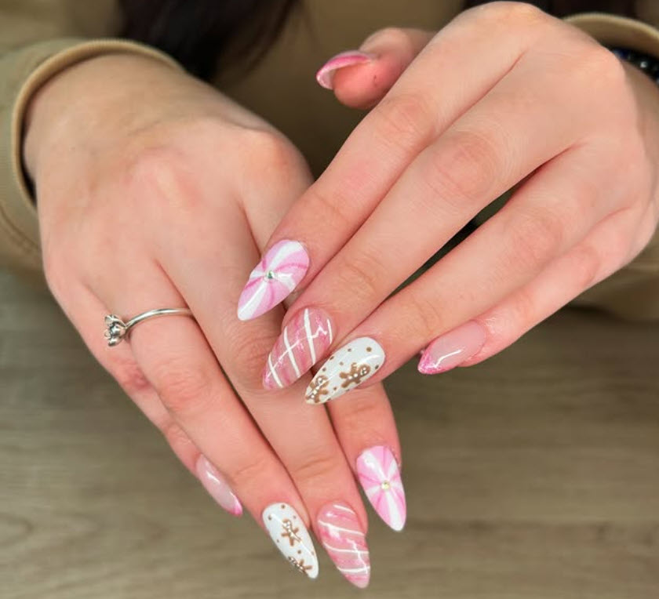

My Services
Table of Contents
Prices
Nail Services Descriptions
Spray Tan Service Description
Facial Services
Descriptions
Prices:
- Regular Manicure: $35
- Gel Manicure: $45
- Gel Overlay: $60
- Gel X Extensions: $75
- Nail Art: Extra$
- Spray Tan: $55
- Korean Glass Skin Facial: $120
- Dermaplaning Facial: $105
- Custom Facial: $135
- Oxygen Peel Facial: $125
- Peptide Peel Facial: $125

Nail Services Descriptions:
Regular Manicure
Experience a classic nail care treatment that focuses on the health and appearance of your natural nails. This service includes meticulous cuticle work to remove dead skin and promote nail growth, followed by a thorough nail clean-up. Your nails will be shaped to your desired length and style, leaving them looking polished and well-groomed.
Gel Manicure
Elevate your nail care routine with our Gel Manicure, which combines the benefits of a regular manicure with the durability of gel polish. This service includes detailed cuticle work and nail preparation to ensure a smooth base. We finish with a high-quality gel polish color that provides a long-lasting, chip-resistant finish, perfect for those seeking a vibrant look that endures.
Gel Overlay Manicure
For those looking for added strength and structure, our Gel Overlay Manicure is an ideal choice. This service begins with comprehensive cuticle work and nail prep, followed by the application of a soft gel that is both soak-off friendly and as durable as acrylic. This technique builds up your natural nails, providing a robust and structured appearance, and is completed with your choice of gel polish color for a stunning finish.
Gel X Extensions
Achieve the perfect nail length and shape with our Gel X Extensions. This service involves applying full cover tips that are cured to each nail using a soft gel, creating seamless and natural-looking extensions. The process is designed for easy removal, allowing you to soak off the extensions when you're ready for a new set. We finish with a gel polish color of your choice, ensuring your nails look flawless and stylish.

Tigers on your Fingers

Like Pieces of Jade

Cute Pink Pastries
Spray Tan Services:
Get a beautiful, sun-kissed glow with our professional spray tan service. We use a rapid solution that develops in just 1-6 hours, allowing you to choose how dark you want your tan to be. After rinsing, the tan continues to develop for 24 hours, providing a natural-looking bronze that lasts 7-10 days. This service is perfect for special events, vacations, or whenever you want to enhance your complexion with a radiant glow.
Facial Services:
Korean Glass Skin Facial / Oxygen Peel / Peptide Peel:
We offer a wide variety of peels for every concern. A chemical peel is a non-surgical procedure that exfoliates dead cells and peels away the skin's top layer to improve sun-damaged, unevenly pigmented, and wrinkled skin. As we age, dead skin cells do not fall off as easily as when we are younger, causing the skin to appear dull.
A chemical peel is a great option if you have any of the following concerns:
- Sun-damaged skin
- Superficial facial wrinkling
- Uneven skin color with blotchiness, sunspots, and brown spots
- Scars that have made the surface of your skin uneven
- Certain precancerous skin growths
- Acne scars
Below are some of the benefits of a chemical peel:
- Make the color of your skin more even
- Improve the texture of your skin
- Restore a healthy, luminous, and radiant appearance
- Look younger
- Get long-lasting results when treating deep wrinkles with a deep chemical peel
- Improve your self-image and self-confidence
Dermaplaning Facial:
Dermaplaning is an exfoliation treatment that involves gently shaving the face with a medical-grade scalpel to remove the very top layer of skin. This process removes both dead skin cells and the fine vellus hairs, known as peach fuzz, leaving the surface of the face ultra-smooth. By stimulating the development of new skin cells, this type of exfoliation - sometimes called a scalpel facial-helps new skin rise to the surface. It leaves patients with a more youthful and dewy face, without any harsh chemicals, excessive downtime, or pain.
Custom Facial:
A customized facial is a completely personalized spa service designed to treat any and all skin concerns you may have. Whether you need exfoliation, acne treatment, moisturization, deep cleansing, or a combination of these, a personalized treatment can address these issues for all skin types.